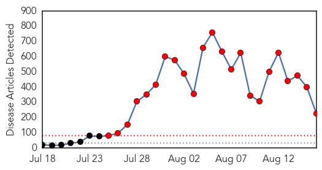
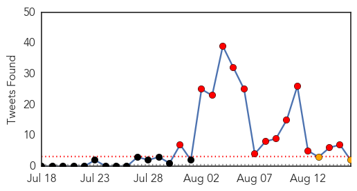
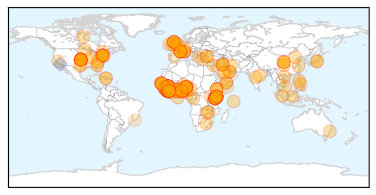
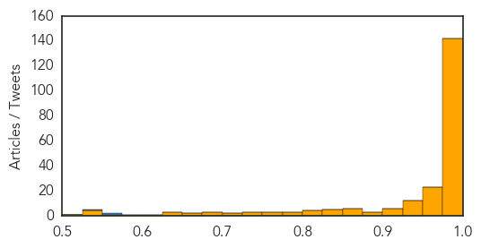

Toggle navigation
Early Warning
Daily Alerts
Ebola
Aug 16, 2014
Compare to:
-
Dengue Fever
Hemmorhagic Fever
Mold/Fungal Infection
Influenza
Meningitis
Pertussis / Whooping Cough
Middle East Respiratory Syndrome
Cholera
Hepatitis
Chikungunya
Yellow Fever
Bubonic Plague
West Nile Virus
Swine Flu
Measles
Unknown
Mumps
30 Day Trends
Web: 23
alerts
, 0
warnings
Twitter: 14
alerts
, 2
warnings
Top Articles:
Showing top 50 articles...
1.000
Nigeria trains 800 volunteers to fight Ebola epidemic
1.000
Liberia President Apologises for High Toll for Ebola Health Workers, Articles
1.000
Guinea Shuts Borders with Sierra Leone, Liberia in Bid to Halt Ebola, Articles
1.000
Doctors Without Borders warns Ebola outbreak could last six months in West Africa
1.000
Nigeria trains 800 volunteers to fight Ebola epidemic – BorneoPost Online
1.000
Curbing Ebola spread in West Africa could take six months
1.000
Ethiopia Braces for Ebola Treatment at Tadias Magazine
1.000
Ebola: Dungavel detainee tests negative for virus
1.000
Kenya bans west Africa travellers
1.000
Kenya Bars Passengers From Ebola-hit West African Nations
1.000
Liberia opens 2nd Ebola center in capital
1.000
Fact Sheets: Response to the Ebola Virus
1.000
Nigeria trains 800 volunteers to fight Ebola
1.000
Aid group: W. Africa Ebola outbreak like 'wartime'
1.000
Kenya Airways suspends flights to Liberia, Sierra Leone - News
1.000
W. Africa Ebola Outbreak Like 'Wartime' — Naharnet
1.000
Full Recovery Possible for 2 U.S. Ebola Patients
1.000
Ebola virus not likely in Wilson County
1.000
WHO: Ebola Outbreak 'Vastly Underestimated'
1.000
Defying the Ebola Odds in Sierra Leone
1.000
Liberia Gives Experimental Ebola Drug to Three Doctors, Opens Second Treatment Center in Capital
1.000
Out of control Ebola Virus Arrives in Saudi Arabia?
1.000
Online News and Information Portal for Ghanaians In Diaspora
1.000
Ebola fight hindered by lack of awareness
1.000
Response to West Africa Ebola Epidemic Remains Dangerously Inadequate
1.000
WHO: Ebola Outbreak 'Vastly Underestimated'
1.000
The most from the coast
1.000
Liberia opening 2nd Ebola center in capital
1.000
Kenya Announces Border, Flight Restrictions to Prevent Ebola
1.000
Ebola Spurs Nigeria Surveillance, Regional Border Limits
1.000
Kenya bars travellers from Ebola-hit nations
1.000
Ebola spreading faster, out of control for next 6 months – Doctors without Borders — RT News
1.000
Nigeria trains 800 volunteers to fight Ebola epidemic
1.000
Sudan Vision Daily
1.000
Liberia expands Ebola treatment in capital - MyNorthwest
1.000
Aid group says West Africa Ebola outbreak like 'wartime'
1.000
Liberia opens 2nd Ebola center in capital
1.000
Ebola Could Last for Longer Than Expected
1.000
Ebola victim numbers swell as more flights halted to West Africa - National
1.000
Ebola outbreak: How Canadian officials are protecting our borders - National
1.000
Ebola Epidemic Most Likely Much Larger Than Reported, W.H.O. Says
1.000
Doctors Without Borders say 6 months needed to curb Ebola spread
1.000
update on the Ebola Virus Dieases in West Africa
1.000
Jehovah's Witnesses meeting in Zimbabwe hit by ebola fears
0.999
Watch out for animal-to-human infection
0.999
EU Calls for Global Coordination to Contain Ebola
0.999
Liberia open second Ebola centre -- NationNews Barbados -- Local, Regional and International News nationnews.com
0.999
Liberia expands Ebola treatment in capital
0.999
Nigeria trains 800 volunteers to fight Ebola
0.999
Liberia expands Ebola treatment in capital
Top Tweets:
0.558
RT: Let intensify the public education to help curb Ebola in Africa...endEBOLAnow
0.533
RT: Response to West Africa Ebola Epidemic Remains Dangerously Inadequate
http://t.co/PUmIW4KStx
Includes latest MSF operational…
Web/News Articles

Tweets

Article Locations

Article Confidences
